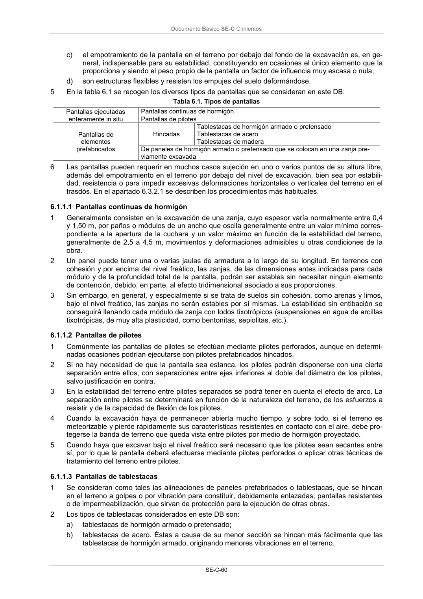

DB-SE-C · 6.1.1.2 Pantallas de pilotes · versión 2019-12-20 · capa oficial
Formatos: JSON compacto · Markdown · PDF fuente
Ámbito del documento · texto del ámbito · documento y tablas
ID técnico a0150 · PDF pág. 65 · jerarquía no validada por persona · contrastado con el literal de la página 65 (candidato tipográfico); no validado por persona · padre: raíz
6.1.1.2 Pantallas de pilotes 1 Comúnmente las pantallas de pilotes se efectúan mediante pilotes perforados, aunque en determi- nadas ocasiones podrían ejecutarse con pilotes prefabricados hincados. 2 Si no hay necesidad de que la pantalla sea estanca, los pilotes podrán disponerse con una cierta separación entre ellos, con separaciones entre ejes inferiores al doble del diámetro de los pilotes, salvo justificación en contra. 3 En la estabilidad del terreno entre pilotes separados se podrá tener en cuenta el efecto de arco. La separación entre pilotes se determinará en función de la naturaleza del terreno, de los esfuerzos a resistir y de la capacidad de flexión de los pilotes. 4 Cuando la excavación haya de permanecer abierta mucho tiempo, y sobre todo, si el terreno es meteorizable y pierde rápidamente sus características resistentes en contacto con el aire, debe pro- tegerse la banda de terreno que queda vista entre pilotes por medio de hormigón proyectado. 5 Cuando haya que excavar bajo el nivel freático será necesario que los pilotes sean secantes entre sí, por lo que la pantalla deberá efectuarse mediante pilotes perforados o aplicar otras técnicas de tratamiento del terreno entre pilotes.

PDF fuente redistribuible: copia fiel enlazada en esta página (SHA256 verificado).